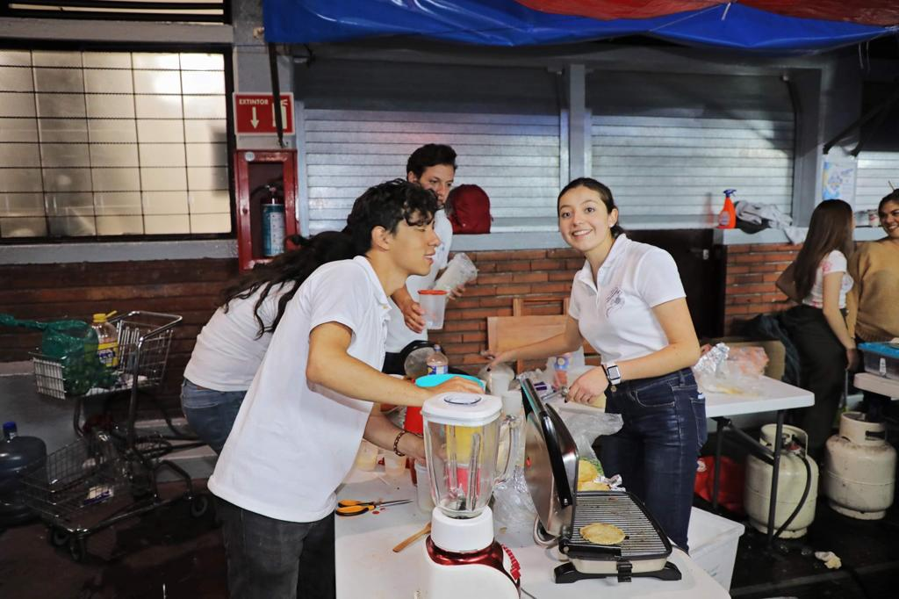

I am currently a data science student at ITAM and I am studying the 7th semester.
For more information, have a look at my curriculum vitae .
This project showcases an innovative approach to solving complex constraint satisfaction problems (CSPs) using state-of-the-art algorithms. We focused on developing a robust solution that integrates techniques like backtracking, propagation of constraints, and heuristic search methods. Our solver demonstrates impressive performance in solving intricate problems such as cryptoarithmetic puzzles and spatial arrangement challenges.
CodeIn this project, we created a sophisticated poker game simulator that leverages artificial intelligence to create a challenging and realistic gaming experience. Our simulator not only plays the game but also incorporates advanced AI strategies for bluffing and decision-making. This project is a perfect blend of computer science, game theory, and AI.
CodeThis blog post offers a deep dive into the critical yet often overlooked issue of gender bias in safety and security measures. Through a detailed analysis, it reveals the significant disparities in how protective equipment and safety protocols are designed, often with a male-centric approach. This leads to increased risks and challenges for women in various fields, including law enforcement, healthcare, and automotive safety. The post highlights key findings and studies, such as the disparity in protective gear suitability for female police officers and higher misdiagnosis rates in women, drawing on research like the University of Virginia's study on traffic accident victims. The aim is to shed light on these biases and advocate for more inclusive and effective safety measures.
Key Insights:
As a passionate Data Science enthusiast, my interests lie at the intersection of data analytics, political science, and economics. I am particularly fascinated by the power of data-driven insights in shaping public policy and economic strategies. Key areas of my interest include:.
Legislative Analysis in Mexico: Utilizing data science to understand and analyze the impacts of legislation on various aspects of society and governance.
Behavioral Economics: Exploring the economic analysis of irrational decision-making, often referred to as 'Behavioral Economics'. I am intrigued by how data can be used to understand and predict economic behaviors that deviate from traditional economic theories.
Overview: In an exciting entrepreneurial challenge, our goal was to generate the highest possible revenue by selling a product of our choice. We embarked on a culinary adventure, choosing to sell tacos. This project wasn't just about cooking and selling; it was a strategic battle against 20 competing teams, each vying to dominate the market.
Challenges and Strategy: Our primary challenge was to devise a team strategy that would maximize profits while navigating the competitive landscape. This involved careful planning, market analysis, and a deep understanding of our strengths as a team. We explored various aspects, from sourcing ingredients to marketing tactics, ensuring our taco stand stood out.
Personal Growth: This venture was transformative for me, particularly in understanding the essence of leadership. Prior to this experience, I tended to shoulder responsibilities alone, driven by a reluctance to rely on others. However, this project taught me the invaluable lesson of trust and delegation. I learned that a significant aspect of leadership is recognizing and harnessing the strengths and weaknesses of team members. By assigning tasks that align with each member's skills and interests, not only did we enhance our operational efficiency, but we also fostered a sense of ownership and enthusiasm within the team.
Impact and Outcome: This experience was enlightening, shifting my perspective on teamwork and leadership. It reinforced the importance of trust, effective communication, and leveraging individual strengths for collective success. Our team's ability to adapt, collaborate, and execute a strategic plan led us to significant financial success in the project, and more importantly, equipped me with leadership insights that I will carry forward in my professional journey
Thank you for visiting my portfolio! If you have any questions, proposals, or just want to connect, I'd love to hear from you. Feel free to reach out to me through any of the following channels, and I'll get back to you as soon as possible. Your feedback and inquiries are always welcome Github .